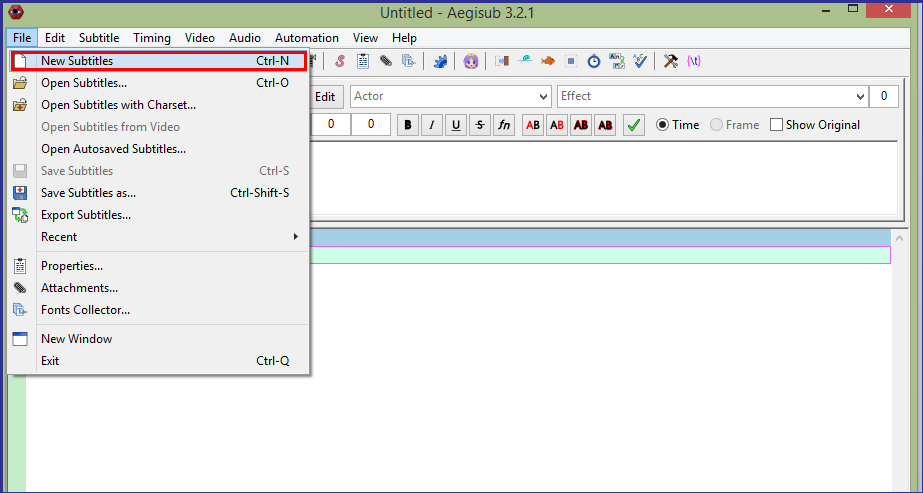

Designing a Style
Style design enhances the readability and aesthetic effects. It is a very important task when adding subtitles to a video. You design a style using the Styles Manager and the Style Editor. You can design the font, size, color, outline, and shadow of subtitles. In the preview area of the Style Editor, you can see the result of your changes. You can also save a style in your storage for later use.
To design a style:
- From the menu, click Subtitles | Styles Manager....
- Click New button under Current script area to create a new style.
- Type desired name for your style in the Style Name field.
- To design the style, do one or more of the following actions:
- Select font and size of the style.
- Select color for primary, secondary, outline, and shadow of the style.
- Select margin and alignment.
- Select width for outline and shadow.
- Select weather subtitles are opaque.
- Select X scale, Y scale, rotation angle of subtitle text, and space between characters.
- Select character encoding.
- Click Apply button to apply the changes for subtitles on the video.
- Click OK button to close the style editor.
- Click <- Copy to storage button to save the newly designed style to the storage.
- Click Close button to close the styles manager.

The styles manager displays.
The style editor displays.
You can see the result in the preview area when you change the settings.